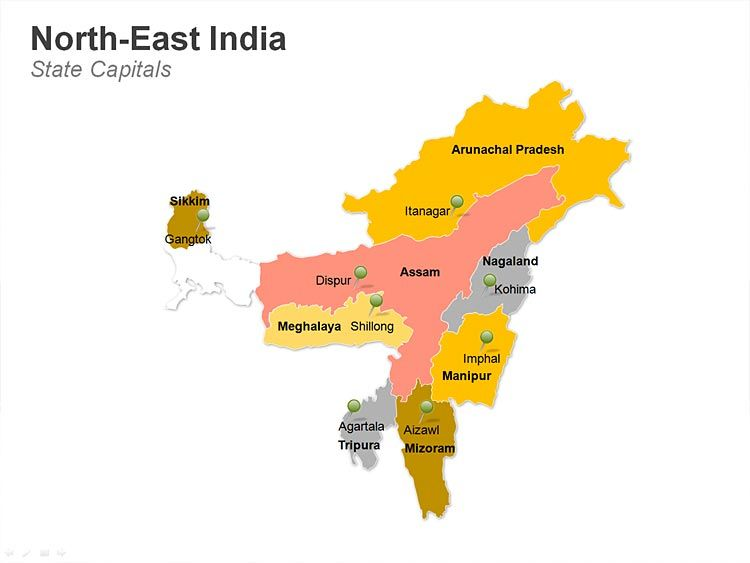
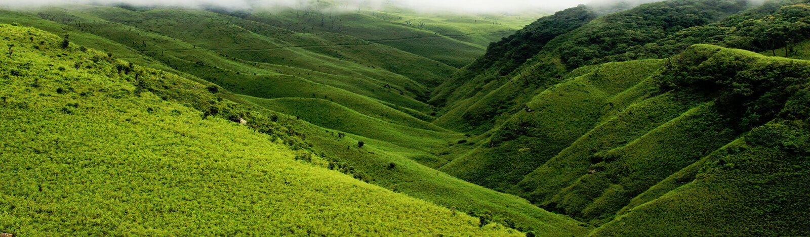
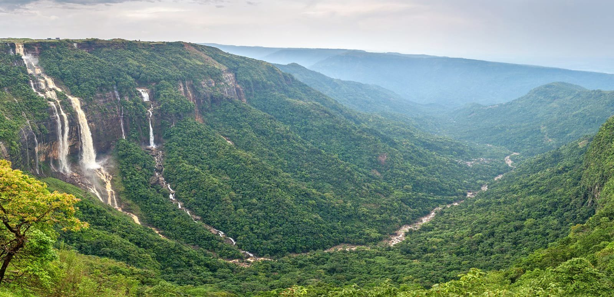

The North-eastern India is one of the hotspot of mega biodiversity centre of the world which falls in
between
Eastern Himalayan belt and Indo-Burmese Region. The prospects of the region include mega biodiversity hot
spot
areas and abundant natural resources such as land and soils, minerals, industrial resources like oils,
forest
covers, agricultural land, rivers, indigenous crop germplasm, flowers and ornamental plants, medicinal and
aromatic plants, livestock, poultry and fisheries. Prevalence of diverse agro-climatic conditions and
natural
vegetation have become a niche of a number of native germplasm of cereals, grain legumes, oil seeds, tuber
crops, fruits, vegetables, spices, medicinal and aromatic plants and indigenous farming systems for
sustenance
of rural population.
Land is a critical resource in many of the north-east states. The region’s agricultural system is
predominantly traditional. The overall geographical land to man ratio for the north-east region
(0.67 hectare / person) is much higher than the national average (0.32 hectare/person). Population
to land ratio is highest in Arunachal Pradesh followed by Mizoram, Sikkim and Manipur. The soil of
the region is acidic to strongly acidic in nature accounting 70 percent of the total geographical
area Low soil pH is basically due to leaching of the bases under the influence of heavy
precipitation. Soils are rich in organic matter. Forest cover in the region is 14.2 million ha which
is about 54.16per cent of total geographical area, even higher than the national average (19.39 per
cent). Mostly, the region is characterized by fragility, marginality, inaccessibility, cultural
heterogeneity, ethnicity and rich in biodiversity. Judicious utilization and conservation of natural
resources is the approach in the farming system concurrent policy and research back up to increase
production, add value to the produce and market management.

Arunachal Pradesh
The North-eastern India is one of the hotspot of mega biodiversity centre of the world which falls
in between Eastern Himalayan belt and Indo-Burmese Region. The prospects of the region include mega
biodiversity hot spot areas and abundant natural resources such as land and soils, minerals,
industrial resources like oils, forest covers, agricultural land, rivers, indigenous crop germplasm,
flowers and ornamental plants, medicinal and aromatic plants, livestock, poultry and fisheries.
Prevalence of diverse agro-climatic conditions and natural vegetation have become a niche of a
number of native germplasm of cereals, grain legumes, oil seeds, tuber crops, fruits, vegetables,
spices, medicinal and aromatic plants and indigenous farming systems for sustenance of rural
population.
Land is a critical resource in many of the north-east states. The region’s agricultural system is
predominantly traditional. The overall geographical land to man ratio for the north-east region
(0.67 hectare / person) is much higher than the national average (0.32 hectare/person). Population
to land ratio is highest in Arunachal Pradesh followed by Mizoram, Sikkim and Manipur.

Meghalaya
Meghalaya, state of India, located in the north eastern part of the country. It is bounded by the
Indian state of Assam to the north and northeast and by Bangladesh to the south and southwest. The
state capital is the hill town of Shillong, located in east-central Meghalaya.
Meghalaya—alaya (“abode”) and megha (“of the clouds”)—occupies a mountainous plateau of great scenic
beauty. It became a state in 1972. Area 8,660 square miles (22,429 square km).